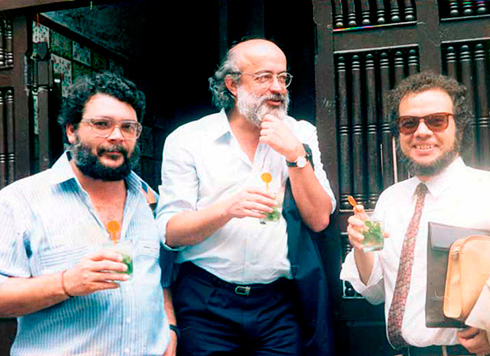
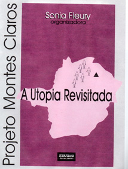
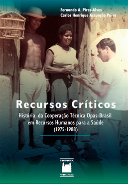

Os novos sanitaristas incorporaram em sua forma de atuação princípios oriundos da
medicina comunitária e de modelos de atenção à saúde propagados pelas agências
internacionais do setor e que tinham por base conceitos como:
Atenção primária;
Acessibilidade;
Descentralização;
Integralidade;
Universalização;
Participação comunitária

Sérgio Arouca (centro) ao lado de Eric
Rosas (esquerda) e Eleutério Rodriguez Neto, duas outras expressivas
lideranças do movimento sanitário brasileiro dos anos 1970-1980. Foto
Cristina TavaresFonte: Acervo Biblioteca Virtual
Sérgio Arouca. Disponível em: Fiocruz. Acesso em: 10 maio 2021.
A segunda metade da década de 1970 foi particularmente rica em experiências
que, de uma forma ou de outra, buscaram colocar em prática aquelas ideias.
Entre elas, podemos citar o Plano de Localização de Serviços de Saúde
(Plus), o Projeto Montes Claros e o Programa de Interiorização das Ações de
Saúde e Saneamento (Piass).
Nesses programas encontram-se alguns dos elementos constitutivos de um modelo
de prestação de serviços de saúde que estão no centro das propostas da
Reforma Sanitária.
Plus
O Plano de Localização de Serviços de Saúde foi a primeira experiência coletiva de
saúde pública no âmbito da previdência social.
Entre seus objetivos estava uma
distribuição mais equitativa dos leitos hospitalares, incluindo o
descredenciamento de leitos privados. Previa que a gestão dos
serviços seria feita por meio da assinatura de convênios entre a
administração federal, governos estaduais, prefeituras e outros órgãos
públicos.
O plano foi objeto de intensas disputas no
interior do INPS e acabou sendo posto de lado por influência dos grupos
privados na previdência.
Montes Claros
O Sistema Integrado de Prestação de Serviços de Saúde no Norte de Minas, que ficou
conhecido como Projeto Montes Claros, foi uma das primeiras tentativas de adoção, em
nível regional, de uma nova forma de organização dos serviços de saúde.
Desenvolvido entre 1975 e 1977, o modelo foi estruturado com base nas seguintes diretrizes: regionalização, hierarquização, integralidade, gestão democrática e eficiente, participação popular e atendimento comunitário por auxiliares de saúde.
Saiba Mais

O Projeto Montes Claros foi
tema de livro organizado pela cientista política Sonia
Fleury nos anos 1990.Fonte: Disponível em:
CEBES Acesso em: 05 jul. 2021.
Em 1978, o Projeto Montes Claros foi incorporado ao Programa de
Interiorização de Ações de Saúde e Saneamento, o Piass.
Piass
Lançado em agosto de 1976 e formalmente vinculado ao Ministério da Saúde, o Programa de Interiorização das Ações de Saúde e Saneamento (Piass) caracterizou-se como uma iniciativa de investimentos visando à expansão da rede de atenção primária de saúde em municípios do interior. Seus dois grandes propósitos foram:
Clique nas imagens para visualizar as informações.
Viabilizar, com foco nos cuidados primários em saúde, a regionalização da atenção e da assistência médica, de forma descentralizada e hierarquizada.
Saiba Mais
O Piass foi concebido, inicialmente, para implantar uma estrutura básica
de saúde pública em comunidades de até 20 mil habitantes na região
Nordeste.
O programa resultou na expansão do modelo alternativo
experimentado em Montes Claros e significou, por
intermédio de parcerias firmadas com os governos
estaduais, uma mudança relevante na forma de atuação
da previdência.
Na gestão do ministro Waldyr Arcoverde (1979-1985),
tornou-se um programa de âmbito nacional, passando a
integrar, em 1981, o Programa Nacional de Serviços
Básicos do Ministério da Saúde.
Como programa estratégico, o Piass não deixou de refletir uma aproximação da política de saúde brasileira aos princípios defendidos em âmbito internacional pela OMS e, em âmbito regional, pela Opas, o que incluía a ênfase no aumento da cobertura dos serviços nas comunidades mais remotas, mediante o uso de pessoal auxiliar recrutado localmente e capacitado para esse fim.
Como iniciativa de ampliação da cobertura da atenção médica, o Piass requeria obrigatoriamente uma segunda frente de ação: a formação e capacitação de pessoal técnico e auxiliar para a saúde. O Programa de Preparação Estratégica de Pessoal de Saúde (Ppreps), contemporâneo do Piass, foi uma resposta a essa demanda:
Apoiando a formação descentralizada, nos estados federativos, de recursos humanos em saúde, em diferentes níveis.
Estabelecendo estruturas de gestão de recursos humanos no interior das secretarias estaduais de saúde, sobretudo na região Nordeste.
Saiba Mais

Para saber mais sobre o Ppreps, veja:
Recursos críticos: história da cooperação técnica Opas-Brasil em recursos humanos para a saúde (1975-1988)
Autores: Fernando A. Pires-Alves, Carlos Henrique Assunção Paiva
Sinopse:
Um livro valioso, que analisa com clareza o papel fundamental dos recursos humanos para a saúde e o desenvolvimento, bem como o contexto e o impacto da reforma sanitária e a relação entre as iniciativas internacionais, nacionais e locais em prol da mudança dos serviços de saúde.
Em 1980, segundo documento oficial do próprio governo, havia no Brasil cerca de 40 milhões de pessoas sem qualquer acesso aos serviços de saúde e à assistência médica.
7a CNS
7a CNS
Não por acaso, o tema central da 7ª Conferência
Nacional de Saúde, realizada em março de
1980, foi a “Extensão das ações de saúde através dos
serviços básicos”. Durante o encontro, foi debatida a
adoção do Programa Nacional de Serviços Básicos de
Saúde, o Prevsaúde.
O Prevsaúde
O Prevsaúde
Batizado inicialmente como Pró-Saúde, o Prevsaúde foi
pensado com o objetivo de promover a integração
dos ministérios da Saúde e da Previdência e
Assistência Social a partir dos serviços
básicos de saúde. De seu desenho institucional
participaram técnicos vinculados ao movimento sanitário.
Saiba Mais
O Prevsaúde teve duas fontes de inspiração:
A proposta “Saúde para Todos no ano 2000”, aprovada pela OMS durante
a Conferência de Alma-Ata, em 1978;
A experiência anterior do Piass.
CONFERÊNCIAS NACIONAIS DE SAÚDE
Além da defesa de programas inovadores no campo da saúde pública, outra
iniciativa estimulada pelos líderes da Reforma Sanitária foi a
revitalização do papel das Conferências Nacionais de Saúde (CNS), que
havia sido esvaziado após o golpe militar.
Até agosto de 1975, quando foi realizada a 5ª CNS, apenas uma vez esse
tipo de encontro havia sido convocado pelo governo: a 4ª CNS, em 1967.
Em oposição aos interesses hegemônicos, que enxergavam nesses fóruns a
oportunidade de legitimar perante a sociedade a dicotomia existente
entre os setores da previdência e da saúde pública, os sanitaristas
conseguiram aprovar algumas de suas propostas nas conferências e levar
ao debate bandeiras caras ao movimento.
Na 5ª CNS, foram aprovadas iniciativas voltadas para a participação
comunitária e para a atenção à saúde das populações marginalizadas.
Na 6ª CNS, em 1977, discutiu-se a situação das grandes endemias e a
interiorização do atendimento.
Já a 7ª CNS, em 1980, foi marcada por ter sido a primeira vez em que se
tratou em âmbito nacional de temas como a hierarquização, a
regionalização e a integração das ações de saúde.
Instituídas em janeiro de 1937, durante o primeiro governo de Getúlio
Vargas (1930-1945), as conferências de saúde passaram por diversas
mudanças ao longo dos anos, mas todas, em maior ou menor grau, exerceram
alguma influência na definição das políticas de saúde.
A 8ª CNS, realizada em 1986, foi, talvez, a mais importante, sendo até
hoje considerada um marco pelo movimento sanitário por ter sido
fundamental para a reforma do sistema de saúde brasileiro e para a
construção do SUS (veremos em detalhes a respeito na próxima aula).
Material Complementar
Para ter acesso aos anais e relatórios da 5ª, da 6ª e da 7ª Conferências Nacionais de Saúde, acesse:
O Prevsaúde visava promover a extensão dos cuidados primários de saúde a toda a população brasileira interligados em uma rede única, hierarquizada e regionalizada, sob controle do poder público.
Em nível federal, a coordenação do programa
ficaria a cargo da Comissão Interministerial de Planejamento e
Coordenação (Ciplan), formada pelos secretários-gerais dos
ministérios da Saúde e da Previdência e Assistência Social.
A exemplo de outras iniciativas similares, o Prevsaúde enfrentou enormes resistências tanto no Ministério da Saúde quanto no da Previdência Social. Seus críticos exigiram a strong>reformulação da proposta. Um mês após a apresentação da primeira versão do projeto, em setembro de 1980, uma segunda versão veio a público, também rejeitada.
Após sucessivas versões – 12 no total –, o Prevsaúde foi finalmente sepultado no começo de 1981.
Pais
Além do Prevsaúde, que nunca chegou a ser efetivado, uma outra iniciativa igualmente importante marcou o debate sobre a saúde no Brasil no início dos anos 1980.
1982
Em agosto de 1982, foi aprovado o Plano de Reorientação
da Assistência à Saúde no Âmbito da Previdência Social, documento
conhecido como Plano do Conasp, uma proposta de ação envolvendo 33
projetos e programas – entre eles o Programa de Ações Integradas
de Saúde (Pais).
O Pais previa a formação de convênios tripartites envolvendo as
pastas da Previdência e da Saúde e os governos estaduais. Tinha como
objetivo racionalizar os recursos disponíveis para o setor
mediante a utilização da capacidade pública ociosa nos estados.
1983
O Pais entrou em funcionamento no segundo semestre de
1983, mas foi prejudicado pela crise econômica que atingia
o país no período. Além disso, a proposta enfrentou o boicote de
setores da burocracia do Inamps ligados ideologicamente aos
interesses da iniciativa privada.
Representantes desses segmentos ocupavam cargos estratégicos na diretoria
do órgão e buscaram priorizar o novo sistema de contas hospitalares e o
projeto de racionalização ambulatorial, em prejuízo da assinatura de
convênios com as administrações estaduais.
1984
Ainda assim, em maio de 1984, todos os estados
brasileiros já haviam formalizado convênios com o Inamps para a
prestação de serviços pelo Pais. Sob o novo sistema, as
prefeituras, financiadas pelo Inamps, recebiam por produção, assumindo
o compromisso de prestar atendimento a toda a população.
Os serviços de saúde da previdência social, no entanto, continuavam
restritos aos trabalhadores com vínculos formais de emprego.
As Ações Integradas de Saúde (AIS)
Na ilustração, uma síntese sobre o funcionamento das AIS. Fonte: slideshare Acesso em: 05 jul. 2021
Em janeiro de 1984, por iniciativa da direção do Inamps, o Pais foi ampliado e
transformado nas Ações Integradas de Saúde (AIS), uma nova
estratégia de atuação que privilegiava o setor público, tendo em mira os
seguintes objetivos principais:
Integração interinstitucional;
Descentralização;
Democratização dos serviços.
Saiba Mais
Formulada numa conjuntura de crise política marcada pela perda de
legitimidade do regime militar, a proposta conseguiu furar o bloqueio
privatista e instalar-se no centro da política de saúde.
Em maio de 1984, uma resolução do Ciplan estabeleceu as AIS como estratégia
oficial de reorientação da política nacional de saúde.
Ciplan
“A Comissão Interministerial de Planejamento (Ciplan) foi instituída em 1980, na época do desenvolvimento do Piass, como instância de articulação entre os ministérios da Saúde e da Previdência e Assistência Social. Posteriormente, o Ministério da Educação também passou a integrar a comissão, que desempenhou importante papel de coordenação na implementação dos convênios das AIS.”
(ESCOREL, Sarah. História
das políticas de saúde no Brasil de 1964 a 1990: do golpe militar à Reforma Sanitária. In: GIOVANELLA, Lígia et al. (org.). Políticas e sistema de saúde no Brasil. 2. ed. rev. e ampl. Rio de Janeiro: Editora Fiocruz, 2012, p. 352).
As Ações Integradas de Saúde (AIS)
As AIS foram implementadas com base nos seguintes princípios gerais:
Integração interinstitucional, tendo como eixo o
setor público;
Definição de propostas a partir do perfil
epidemiológico da população;
Regionalização e hierarquização de todos os
serviços públicos e privados;
Valorização das atividades básicas;
Utilização prioritária e plena da capacidade
potencial da rede pública;
Descentralização dos processos de gestão;
Planejamento da cobertura assistencial;
Desenvolvimento de recursos humanos;
Reconhecimento da participação popular.
Fonte: ESCOREL, Sarah. História das políticas de saúde no Brasil de
1964 a 1990: do golpe militar à Reforma Sanitária. In: GIOVANELLA, Lígia et al.
(org.). Políticas e sistema de saúde no Brasil. 2. ed. rev. e ampl. Rio de
Janeiro: Editora Fiocruz, 2012, p. 352
"A batalha sanitária é uma questão suprapartidária, nenhuma pessoa,
instituição, partido, agrupamento, categoria ou entidade enfrenta
sozinha essa luta."O sanitarista e ex-presidente da Fiocruz Sergio Arouca (Foto: Nana Moraes). Fonte: Agência Fiocruz de Notícia
Sem prejuízo da hegemonia do Inamps no setor, as AIS
priorizaram a descentralização das ações de atenção à
saúde para o nível local. Postos e centros de saúde
passaram a oferecer assistência médica, além dos
serviços e programas de saúde pública, em diversos
municípios do país.
As AIS significaram uma mudança profunda no
relacionamento da previdência social com as instâncias
públicas de saúde de estados e municípios. Até então,
eram escassos os convênios firmados por prefeituras e
administrações estaduais com o Inamps, especialmente em
locais governados pela oposição.
Com as AIS, a sociedade civil organizada foi finalmente
chamada a participar da formulação das políticas de
saúde.
Para Refletir
Ainda assim, antes do advento da Nova República, a adesão às AIS foi
limitada. Até 1984, apenas 132 municípios tinham firmado convênios com o
governo federal. Além de parcial, sua implantação foi muito desigual nas
diversas regiões do país, a depender do grau de comprometimento de cada
localidade com o projeto.
Não faltaram também distorções na execução da proposta, com muitos
governadores centralizando a tomada de decisões em detrimento dos poderes
municipais.
Material Complementar
DOCUMENTÁRIO AÇÕES INTEGRADAS DE SAÚDE 1986
Para concluir o tópico sobre as Ações Integradas de Saúde (AIS), selecionamos o documentário a seguir. Aproveite!
Sinopse:
Realizado pela produtora Focus Vídeo em 1986, este documentário conta um
pouco sobre o processo de implantação das Ações Integradas de Saúde (AIS) no
município de São Lourenço, em Minas Gerais, nos anos 1980.
BENCHIMOL, Jaime L. Reforma urbana e revolta da vacina na cidade do Rio de Janeiro. In: Jorge Ferreira; Lucilia de Almeida Neves. (org.). Brasil republicano. Economia e sociedade, poder e política, cultura e representações. Rio de Janeiro: Editora Civilização Brasileira, 2003, v.1, pp. 231-286.
BENCHIMOL, Jaime L. e Teixeira, Luiz A. Cobras, Lagartos e Outros Bichos: uma História Comparada dos Institutos Oswaldo Cruz e Butantan. 1. ed. Rio de Janeiro: UFRJ/FIOCRUZ, 1993. 238p .
BENCHIMOL, Jaime L. (org.) Manguinhos do sonho à vida: a ciência na Belle Époque. 2a. ed. Rio de Janeiro: Editora Fiocruz, 2020. v.1. 320p.
BENCHIMOL, Jaime L. Dos micróbios aos mosquitos. Febre amarela e a revolução pausteriana no Brasil. Rio de Janeiro: Editora Fiocruz/Editora da UFRJ, 1999. v.1. 498p.
CASTRO-SANTOS, Luiz Antônio de. A reforma sanitária pelo alto: o pioneirismo paulista no início do século XX. Dados, v. 36, n.3, 1993, pp. 361-92.
CHALHOUB, Sidney. Cidade febril: cortiços e epidemias na Corte imperial. São Paulo: Companhia das Letras, 1996, pp. 97-185.
TEIXEIRA, Luiz Antônio; EDLER, F. C. História e Cultura da Medicina no Brasil. 1. ed. São Paulo: Aori Produções Culturais, 2012. v.1. 2081p.
TEIXEIRA, Luiz Antônio. Ciência e Saúde na Terra dos Bandeirantes: A Trajetória do Instituto Pasteur de São Paulo 1903-1915. 1. ed. Rio de Janeiro: Editora da Fiocruz, 1995. 233p.
TELAROLLI JÚNIOR, Rodolpho. Poder e saúde: as epidemias e a formação dos serviços de saúde em São Paulo. São Paulo: Unesp, 1986.
BATALHA, Cláudio H. M. “Sociedades de trabalhadores no Rio de Janeiro do século XIX: algumas reflexões em torno da formação da classe operária”, in: Cadernos AEL: sociedades operárias e mutualismo, Campinas, UNICAM-IFCH, vol. 6, no 10/11, 1999, pp. 43-66.
BOSCHETTI, Ivanete. Seguridade social e trabalho: paradoxos na construção de políticas de previdência e assistência social no Brasil. Brasília: Letras Livres; Ed. UnB, 2006.
BRAGA, Jose Carlos de Souza & PAULA, Sergio Goes de. Saúde e previdência: estudos de política social. São Paulo: Cebes/Hucitec, 1981.
CARDOSO, Adalberto Moreira Cardoso. A Construção da sociedade do trabalho no Brasil, Rio de janeiro: FGV, 2014.
CORREA, Larissa. “Corporativismo e regulamentação do trabalho no Brasil: um debate entre especialistas brasileiros e norte-americanos na década de 1960”, Sociologia Antropologia, Vol. 6, nº 1 (2016a): 209 -234.
CORREA, Larissa. “O corporativismo dos trabalhadores: leis e direitos na Justiça do Trabalho entre os regimes democrático e ditatorial militar no Brasil (1953-1978)”, vol 42, nº 2 (2016b): 500-526.
Dicionário Histórico-Biográfico Brasileiro pós-1930. 2. ed. Rio de janeiro: Ed. FGV, CPDOC, 2000.
FLEURY, Sonia. Assistência médica previdenciária: evolução e crise de uma política social. In: FLEURY, Sonia; BAHIA, Lígia e AMARANTE, Paulo (Orgs.). Saúde em debate: fundamentos da reforma sanitária. Rio de Janeiro: CEBES, 2007.
FORTES, Alexandre. “Da solidariedade à assistência: estratégias organizativas e mutualidade no movimento operário de Porto Alegre na primeira metade do século XX”, in: Cadernos AEL: sociedades operárias e mutualismo, Campinas, UNICAM-IFCH, vol. 6, no 10/11, 1999, pp. 173-218.
GOMES, Angela de Castro. Ideologia e trabalho no Estado Novo. In: PANDOLFI, Dulce (Org.). Repensando o Estado Novo. Rio de Janeiro: Ed. FGV, 1999, p. 57.
GOMES, Angela de Castro. A invenção do trabalhismo. São Paulo; Rio de Janeiro: Vértice; Iuperj, 1988.
GOMES, Angela de Castro. “Ideologia e Trabalho no Estado Novo” , in: PANDOLFI, Dulce (org.) Repensando o Estado Novo, Rio de JANEIRO, Editora da FGV, 1999, p. 57.
__________Aprendizado e Difusão na Constituição de Políticas: A Previdência social e seus técnicos, in: Revista Brasileira de Ciências Sociais, vol 3, nº 7 (1988):84-98.
HOCHMAN, Gilberto. Duas gêneses, duas histórias na previdência social brasileira: o Instituto dos Industriários e o Instituto dos Bancários. Cadernos de História e Saúde – Casa de Oswaldo Cruz, v. 2, Fiocruz, 1992.
______ e FONSECA, Cristina M. O. O que há de novo? Políticas de saúde pública e previdência, 1937-45. In: PANDOLFI, Dulce (Org.). Repensando o Estado Novo. Rio de Janeiro: Ed. FGV, 1999.
KERSTENETZKY, Célia. O Estado do Bem-Estar Social na Idade da Razão. Rio de Janeiro: Elselvier, 2012.
LOBO, Valéria Marques. Corporativismo à Brasileira: entre o autoritarismo e a democracia, Estudos Ibero- americanos, 527-552, vol 42, nº 2, 2016.
________ Democracia e Justiça: Tribunais do Trabalho no Estado Novo, Em, O que há de novo sobre o Estado Novo? Autoritarismo e democracia, orgs. Freire, Américo; Martinho, Francisco Carlos P; Vannucchi, Marco Aurélio, 111-134 Rio de Janeiro:FGV, 2019.
MALLOY, James. Política de previdência social no Brasil. Rio de Janeiro: Graal, 1986.
OLIVEIRA, Jaime e TEIXEIRA, Sônia. (Im)previdêcia social: 60 anos de história da previdência no Brasil. Petrópolis; Rio de Janeiro: Vozes; Abrasco, 1986.
REIS, José Roberto Franco. Considerações historiográficas sobre corporativismo, cidadania regulada e a história da assistência à saúde no Brasil: dádiva ou direito? (1930-1964), in: LOCUS, Revista de História, Juiz de Fora, vol 26, n.2, 2020.
__________Vargas e a Previdência: entre a dádiva e o direito, in: PONTE, Carlos, Fidélis; FALHEIROS, Ialê (orgs). Na Corda bamba de sombrinha: a saúde no fio da História, Rio de Janeiro, Fiocruz/COC; Fiocruz/EPSJV, 2010.
_________Estado, trabalhadores e previdência social: a dialética do direito e do protetor (1937-47). In: SENA JUNIOR, Zacarias F. de. O Estado Novo: as múltiplas faces de uma experiência autoritária. Salvador: Eduneb, 2008.
______. Cultura de direitos e Estado: os caminhos (in)certos da cidadania no Brasil. In: MOROSINI, Márcia Valéria G. C. e REIS, José Roberto F. Sociedade, Estado e direito à saúde. Rio de Janeiro: EPSJV; Fiocruz, 2007.
SANTOS, Wanderley Guilherme dos. Cidadania e justiça: a política social na ordem brasileira. 2. ed. Rio de Janeiro: Campus, 1987.
VIANNA, Maria Lúcia T. Werneck. A americanização perversa da seguridade social do Brasil: estratégias de bem-estar e políticas públicas. 2. ed. Rio de Janeiro: Revan; Ucam-Iuperj, 2000.
TEIXEIRA, Sonia Fleury. “O dilema da reforma sanitária Brasileira”. In: Berlinguer, Giovanni; Teixeira, Sonia Fleury; Campos, Gastão Wagner de Sousa. Reforma sanitária: Itália e Brasil. São Paulo: Editora Cebes; Hucitec. p.195-207. 1988
PAIVA, Carlos Henrique Assunção e TEIXEIRA, Luiz Antonio. “Reforma sanitária e a criação do Sistema Único de Saúde: notas sobre contextos e autores”. Hist. cienc. saude-Manguinhos, Mar 2014, vol.21, no.1, p.15-36.
Créditos
Ministério da Saúde
Marcelo Queiroga
Ministro
Fundação Oswaldo Cruz – Fiocruz
Nísia Trindade Lima
Presidente
Vice-Presidência de Educação, Informação e Comunicação (VPEIC) Cristiani Vieira Machado
Vice-Presidente
Campus Virtual Fiocruz
Ana Cristina da Matta Furniel
Coordenadora geral
Adélia Araújo
Coordenadora de produção
História da Saúde Pública no Brasil
Carlos Henrique Assunção Paiva
Coordenação acadêmica
Carlos Henrique Assunção Paiva
Historiador. Doutor em Saúde Coletiva pelo IMS/UERJ. Coordenador do Observatório História e Saúde/COC/Fiocruz. Professor do PPGHCS/COC/Fiocruz.
Conteudistas
Carlos Henrique Assunção Paiva
Historiador. Doutor em Saúde Coletiva pelo IMS/UERJ. Coordenador do Observatório História e Saúde/COC/Fiocruz. Professor do PPGHCS/COC/Fiocruz.
José Roberto Franco Reis
Historiador. Doutor em história social pela Unicamp. Pesquisador do Observatório História e Saúde - COC-FIOCRUZ
Luiz Antonio da Silva Teixeira
Historiador. Doutor em História Social pela USP. Coordenador adjunto do Programa de Pós-graduação em Saúde da Mulher e da Criança do Instituto Fernandes Figueira - Fiocruz; Professor dos Programas de História das ciências da Saúde e de Divulgação de Científica da Casa de Oswaldo Cruz
Luiz Alves Araújo Neto
Historiador. Doutor em História das Ciências e da Saúde pela Fiocruz. Bolsista de Pós-doutorado FAPERJ (PDR-10). Pesquisador do Observatório História e Saúde (COC/Fiocruz).
Luís Octavio Gomes de Souza
Cientista social formado pela Universidade Federal Fluminense (UFF). Pesquisador e redator freelancer em História do Brasil e História da Saúde Pública no Brasil.
Colaboradores - Relatos em áudio e vídeo
Flávio Coelho Edler
Historiador. Doutor em Saúde Coletiva pelo IMS/UERJ. Professor do PPGHCS/COC/Fiocruz.
Robert Wegner
Cientista Social. Doutor em Sociologia pelo IUPERJ/UCAM. Professor do PPGHCS/COC/Fiocruz.
Rômulo de Paula Andrade
Historiador. Doutor em História das Ciências e da Saúde pelo PPGHCS/Fiocruz. Professor do PPGHCS/COC/Fiocruz.
Tânia Maria Dias Fernandes
Graduada em Farmácia. Doutora em História Social pela USP. Professora do PPGHCS/COC/Fiocruz.
Tânia Salgado Pimenta
Historiadora. Doutora em História pela Unicamp. Professora do PPGHCS/COC/Fiocruz.
Revisão Técnica
Carlos Henrique Assunção Paiva
Historiador. Doutor em Saúde Coletiva pelo IMS/UERJ. Coordenador do Observatório História e Saúde/COC/Fiocruz. Professor do PPGHCS/COC/Fiocruz.
José Roberto Franco Reis
Historiador. Doutor em história social pela Unicamp. Pesquisador do Observatório História e Saúde - COC-FIOCRUZ.
Luiz Antonio da Silva Teixeira
Historiador. Doutor em História Social pela USP. Coordenador adjunto do Programa de Pós-graduação em Saúde da Mulher e da Criança do Instituto Fernandes Figueira - Fiocruz; Professor dos Programas de História das ciências da Saúde e de Divulgação de Científica da Casa de Oswaldo Cruz.
Luiz Alves Araújo Neto
Historiador. Doutor em História das Ciências e da Saúde pela Fiocruz. Bolsista de Pós-doutorado FAPERJ (PDR-10). Pesquisador do Observatório História e Saúde (COC/Fiocruz).
Luís Octavio Gomes de Souza
Cientista social formado pela Universidade Federal Fluminense (UFF). Pesquisador e redator freelancer em História do Brasil e História da Saúde Pública no Brasil.
Revisão de Português
Maria Angélica Marcondes Drska - Campus Virtual Fiocruz
Designer Educacional
Fernanda Sousa - Campus Virtual Fiocruz
Pedagoga, Especialista em Planejamento, Implementação e Gestão de Educação a Distância e Especialista em Gestão de Projetos
Designer de Interface
Aline Polycarpo
Designer de Interface e Interação
Danilo Blum
Desenvolvedor Front-end
Luciana Nunes
Designer de Interface e Interação
Suporte Técnico de Tecnologia da Informação
Bruno Alexandre de Oliveira - Campus Virtual Fiocruz